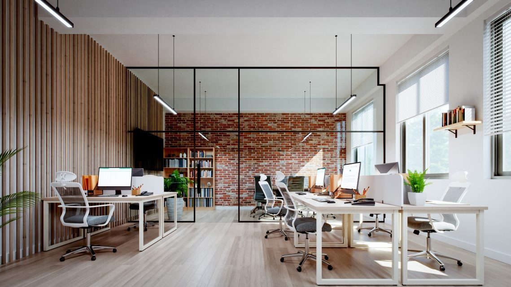
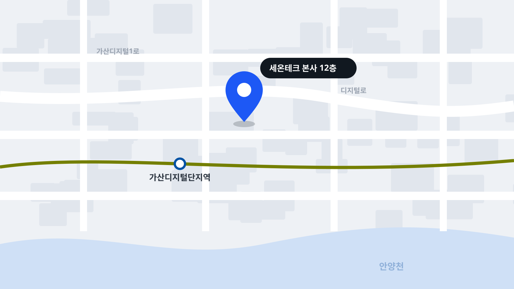

회사소개
2012년 자동차 라인 자동화로 시작해, 설비와 데이터를 함께 다루는 스마트팩토리 기업으로 성장했습니다.

“좋은 공장은 멈춘 이유를 설명할 수 있는 공장입니다.”
안녕하십니까. 세온테크 대표이사 윤세온입니다.
저는 자동차 차체 공장의 설비 엔지니어로 일을 시작했습니다. 라인이 멈출 때마다 원인을 찾느라 밤을 새웠고, 그때마다 데이터는 여러 시스템에 흩어져 있었습니다. 로봇은 로봇대로, 검사 장비는 검사 장비대로 따로 기록을 남겼습니다.
세온테크는 이 흩어진 기록을 하나로 잇기 위해 시작했습니다. 로봇 셀을 설계하는 엔지니어와 생산관리 시스템을 만드는 개발자가 한 팀에서 일하고, 모든 설비 데이터를 같은 시간축에 모읍니다. 그래서 우리 고객은 라인이 왜 멈췄는지, 무엇을 바꾸면 나아지는지를 숫자로 확인합니다.
앞으로도 현장에서 검증한 기술로, 국내 제조기업이 더 오래 경쟁할 수 있는 공장을 함께 만들겠습니다. 고맙습니다.
(주)세온테크 대표이사
윤세온
회사 개요
로봇 자동화 엔지니어링과 제조 소프트웨어를 함께 만드는 회사입니다.
| 회사명 | (주)세온테크 |
|---|---|
| 대표이사 | 윤세온 |
| 설립일 | 2012년 5월 8일 |
| 임직원 | 231명 (엔지니어 164명) |
| 사업 분야 | 로봇 자동화, 생산관리 시스템, 머신비전 검사, 디지털 트윈 |
| 본사 | 서울특별시 금천구 가산디지털1로 00, 세온타워 12층 |
| 연구소·지사 | 판교 R&D 센터 · 울산 기술지원센터 · 아산 사무소 |
연혁
현장에서 필요했던 것을 하나씩 만들어 온 기록입니다.

- 2026
- 03월본사 가산 세온타워 이전
- 06월판교 R&D 센터 개소
- 10월SEON MES 7.0 출시
- 2024
- 02월머신비전 품질검사 SEON Vision 출시
- 08월울산 기술지원센터 개소
- 12월구축 생산 라인 150개 돌파
- 2021
- 04월디지털 트윈 플랫폼 SEON Twin 출시
- 09월스마트제조 혁신 바우처 공급기업 선정
- 2017
- 03월생산관리 시스템 SEON MES 1.0 출시
- 11월기업부설연구소 설립
- 2012
- 05월(주)세온테크 설립, 자동차 차체 라인 로봇 자동화 시작
- 10월첫 완성차 협력사 용접 라인 구축
오시는 길
방문 상담은 예약 후 이용해 주세요. 주차는 건물 지하 2시간 무료입니다.

서울특별시 금천구 가산디지털1로 00, 세온타워 12층
지도 앱에서 보기 우편번호 08590
지하철
17가산디지털단지역 5번 출구에서 도보 7분
버스
가산디지털단지 정류장 하차 (간선 503, 지선 5714, 금천05)
주차
건물 지하 1~4층, 방문 고객 2시간 무료
대표전화
02-000-0000 (평일 9시~18시)